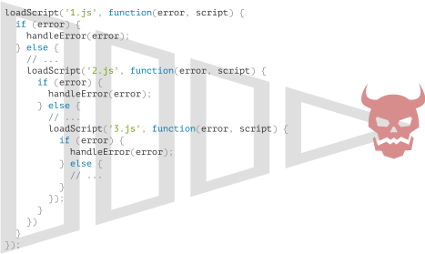

为了演示回调、promise 和其他抽象概念的使用，我们将使用一些浏览器方法：具体地说，是加载脚本和执行简单的文档操作的方法。
如果你不熟悉这些方法，并且对它们在这些示例中的用法感到疑惑，那么你可能需要阅读本教程 [下一部分](/document) 中的几章。
但是，我们会尽全力使讲解变得更加清晰。在这儿不会有浏览器方面的真正复杂的东西。JavaScript 主机（host）环境提供了许多函数，这些函数允许我们计划 异步 行为（action）。换句话说，我们现在开始执行的行为，但它们会在稍后完成。
例如，setTimeout 函数就是一个这样的函数。
这儿有一些实际中的异步行为的示例，例如加载脚本和模块（我们将在后面的章节中介绍）。
让我们看一下函数 loadScript(src)，该函数使用给定的 src 加载脚本：
function loadScript(src) {
// 创建一个 <script> 标签，并将其附加到页面
// 这将使得具有给定 src 的脚本开始加载，并在加载完成后运行
let script = document.createElement('script');
script.src = src;
document.head.append(script);
}它将带有给定 src 的新动态创建的标签 <script src="…"> 附加到文档中。浏览器将自动开始加载它，并在加载完成后执行。
我们可以像这样使用这个函数：
// 在给定路径下加载并执行脚本
loadScript('/my/script.js');脚本是“异步”调用的，因为它从现在开始加载，但是在这个加载函数执行完成后才运行。
如果在 loadScript(…) 下面有任何其他代码，它们不会等到脚本加载完成才执行。
loadScript('/my/script.js');
// loadScript 下面的代码
// 不会等到脚本加载完成才执行
// ...假设我们需要在新脚本加载后立即使用它。它声明了新函数，我们想运行它们。
但如果我们在 loadScript(…) 调用后立即执行此操作，这将不会有效。
loadScript('/my/script.js'); // 这个脚本有 "function newFunction() {…}"
newFunction(); // 没有这个函数！
自然情况下，浏览器可能没有时间加载脚本。到目前为止，loadScript 函数并没有提供跟踪加载完成的方法。脚本加载并最终运行，仅此而已。但我们希望了解脚本何时加载完成，以使用其中的新函数和变量。
让我们添加一个 callback 函数作为 loadScript 的第二个参数，该函数应在脚本加载完成时执行：
function loadScript(src, callback) {
let script = document.createElement('script');
script.src = src;
script.onload = () => callback(script);
document.head.append(script);
}现在，如果我们想调用该脚本中的新函数，我们应该将其写在回调函数中：
loadScript('/my/script.js', function() {
// 在脚本加载完成后，回调函数才会执行
newFunction(); // 现在它工作了
...
});这是我们的想法：第二个参数是一个函数（通常是匿名函数），该函数会在行为（action）完成时运行。
这是一个带有真实脚本的可运行的示例：
function loadScript(src, callback) {
let script = document.createElement('script');
script.src = src;
script.onload = () => callback(script);
document.head.append(script);
}
loadScript('https://cdnjs.cloudflare.com/ajax/libs/lodash.js/3.2.0/lodash.js', script => {
alert(`Cool, the script ${script.src} is loaded`);
alert( _ ); // 所加载的脚本中声明的函数
});
这被称为“基于回调”的异步编程风格。异步执行某项功能的函数应该提供一个 callback 参数用于在相应事件完成时调用。（译注：上面这个例子中的相应事件是指脚本加载）
这里我们在 loadScript 中就是这么做的，但当然这是一种通用方法。
我们如何依次加载两个脚本：第一个，然后是第二个？
自然的解决方案是将第二个 loadScript 调用放入回调中，如下所示：
loadScript('/my/script.js', function(script) {
alert(`Cool, the ${script.src} is loaded, let's load one more`);
loadScript('/my/script2.js', function(script) {
alert(`Cool, the second script is loaded`);
});
});在外部 loadScript 执行完成时，内部回调就会被回调。
如果我们还想要一个脚本呢？
loadScript('/my/script.js', function(script) {
loadScript('/my/script2.js', function(script) {
loadScript('/my/script3.js', function(script) {
// ...加载完所有脚本后继续
});
})
});因此，每一个新行为（action）都在回调内部。这对于几个行为来说还好，但对于许多行为来说就不好了，所以我们很快就会看到其他变体。
在上述示例中，我们并没有考虑出现 error 的情况。如果脚本加载失败怎么办？我们的回调应该能够对此作出反应。
这是 loadScript 的改进版本，可以跟踪加载错误：
function loadScript(src, callback) {
let script = document.createElement('script');
script.src = src;
script.onload = () => callback(null, script);
script.onerror = () => callback(new Error(`Script load error for ${src}`));
document.head.append(script);
}加载成功时，它会调用 callback(null, script)，否则调用 callback(error)。
用法：
loadScript('/my/script.js', function(error, script) {
if (error) {
// 处理 error
} else {
// 脚本加载成功
}
});再次强调，我们在 loadScript 中所使用的方案其实很普遍。它被称为“Error 优先回调（error-first callback）”风格。
约定是：
callback 的第一个参数是为 error 而保留的。一旦出现 error，callback(err) 就会被调用。callback(null, result1, result2…) 就会被调用。因此，单一的 callback 函数可以同时具有报告 error 和传递返回结果的作用。
乍一看，这是一种可行的异步编程方式。的确如此，对于一个或两个嵌套的调用看起来还不错。
但对于一个接一个的多个异步行为，代码将会变成这样：
loadScript('1.js', function(error, script) {
if (error) {
handleError(error);
} else {
// ...
loadScript('2.js', function(error, script) {
if (error) {
handleError(error);
} else {
// ...
loadScript('3.js', function(error, script) {
if (error) {
handleError(error);
} else {
// ...加载完所有脚本后继续 (*)
}
});
}
})
}
});在上面这段代码中：
1.js，如果没有发生错误。2.js，如果没有发生错误。3.js，如果没有发生错误 — 做其他操作 (*)。如果调用嵌套的增加，代码层次变得更深，维护难度也随之增加，尤其是我们使用的是可能包含了很多循环和条件语句的真实代码，而不是例子中的 ...。
有时这些被称为“回调地狱”或“厄运金字塔”。

嵌套调用的“金字塔”随着每个异步行为会向右增长。很快它就失控了。
所以这种编码方式不是很好。
我们可以通过使每个行为都成为一个独立的函数来尝试减轻这种问题，如下所示：
loadScript('1.js', step1);
function step1(error, script) {
if (error) {
handleError(error);
} else {
// ...
loadScript('2.js', step2);
}
}
function step2(error, script) {
if (error) {
handleError(error);
} else {
// ...
loadScript('3.js', step3);
}
}
function step3(error, script) {
if (error) {
handleError(error);
} else {
// ...加载完所有脚本后继续 (*)
}
};看到了吗？它的作用相同，但是没有深层的嵌套了，因为我们将每个行为都编写成了一个独立的顶层函数。
它可以工作，但是代码看起来就像是一个被撕裂的表格。你可能已经注意到了，它的可读性很差，在阅读时你需要在各个代码块之间跳转。这很不方便，特别是如果读者对代码不熟悉，他们甚至不知道应该跳转到什么地方。
此外，名为 step* 的函数都是一次性使用的，创建它们就是为了避免“厄运金字塔”。没有人会在行为链之外重用它们。因此，这里的命名空间有点混乱。
我们希望还有更好的方法。
幸运的是，有其他方法可以避免此类金字塔。最好的方法之一就是 "promise"，我们将在下一章中介绍它。